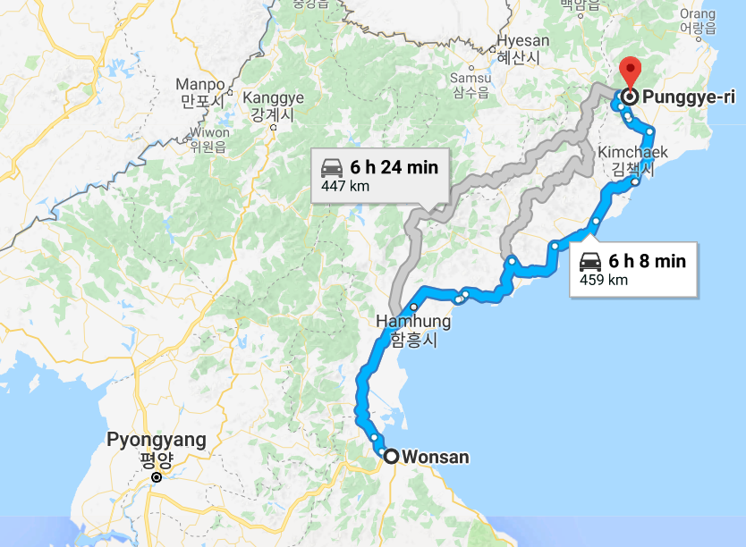
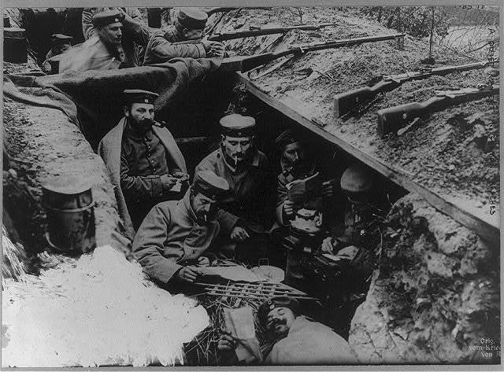
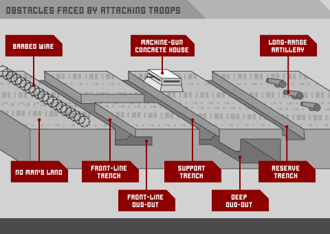
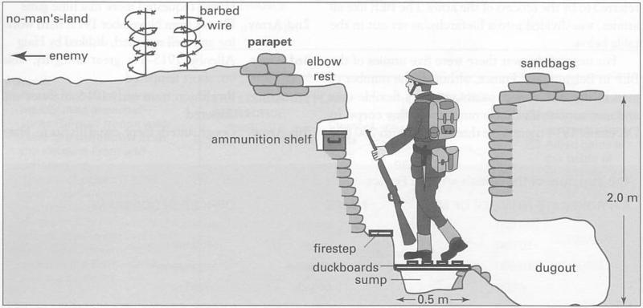
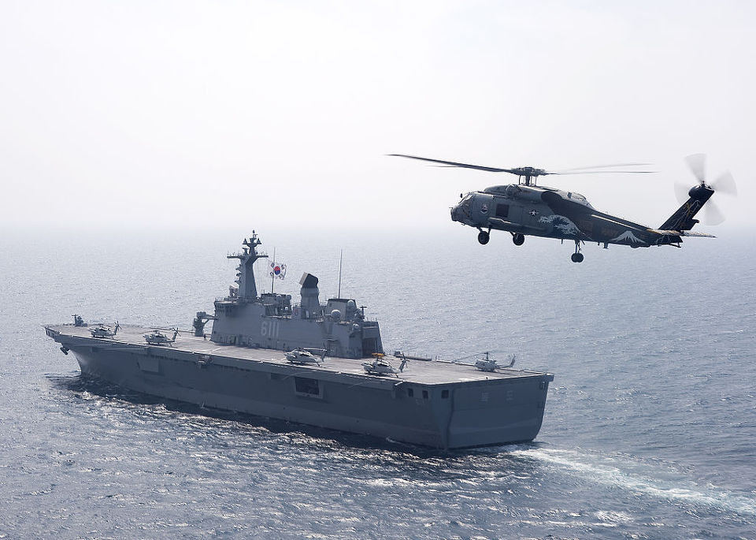
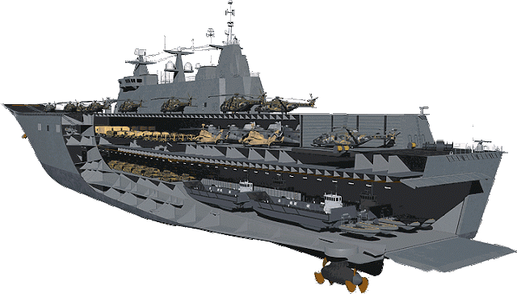
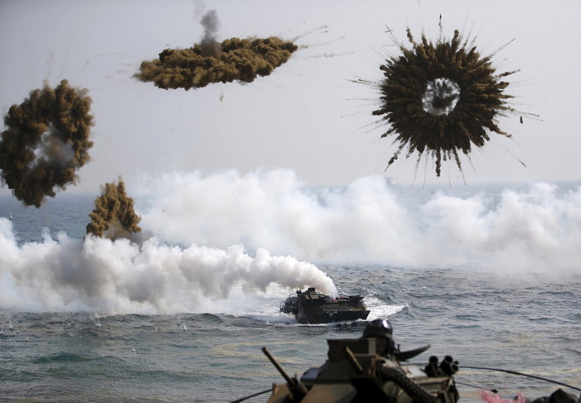
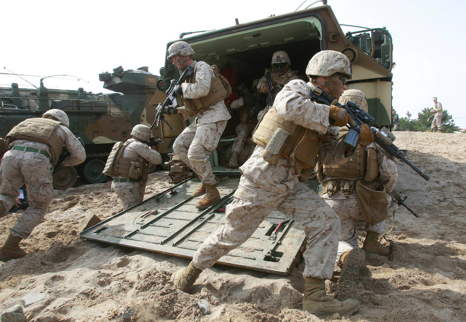

북한은 대체 왜 병력의 70%를 전진배치했을까 ? - 철도와 군대
게시: 2018-06-17T08:00:00+09:00
4줄 요약 :
1) 북한은 전체 병력 70%를 휴전선에 배치하는 기형적인 병력 배치를 하여 한미 연합군의 후방 상륙에 속수무책인데, 이는 아마 엉망인 내부 교통망 때문인 듯 합니다.
2) 상륙 작전을 하는 한미 연합 훈련은 분명히 공세적 훈련 맞고, 북한군을 속수무책으로 만드는 그런 훈련에 기겁을 하는 것은 충분히 이해가 가는 일입니다.
3) 비핵화 협상에서 무장해제를 하는 측은 북한입니다. 만약 비핵화 약속을 지키지 않으면 우리는 그냥 한미 훈련을 다시 하면 됩니다. 독도함 해체하라는 요구도 아닌데 마치 우리가 무장해제하는 것처럼 오도할 필요는 없습니다.
4) 만약 북한이 핵을 고수하고, 정말 남한에 사용하기 위해 핵을 만든 것이라면, 어차피 상륙작전이나 기갑부대 훈련으로는 핵을 막지 못합니다. 비핵화와 연합훈련 중단을 맞바꾸는 것은 분명 이익입니다.
트럼프 대통령이 평화 협상이 진행되는 동안에는 '돈이 많이 들고 도발적인' 한미 연합 훈련을 중단하겠다고 발표한 것에 대해 미국의 진보층과 한국의 보수층, 그리고 일본에서 반발이 꽤 있는 것 같습니다.
우리 측에서는 항상 키 리졸브나 독수리 연습 등의 연합 훈련을 순수한 '방어적' 군사 훈련이라고 해왔는데, 이걸 '도발적'이라고 표현한 것에 대해 특히 문제를 제기하는 사람들이 꽤 있지요. 그런데 우리의 그런 훈련들이 정말 '방어적'이고 '도발적'일까요 ?
제가 중고등학교 다닐 때부터, 귀에 못이 박히도록 들은 이야기가 북한은 항상 남한을 침공하여 적화하려는 야욕에 불타고 있다, 그 증거로 전 병력의 70%를 휴전선 인근에 집중 배치해놓고 있다 뭐 그런 것이었습니다. 분명히 평화는 좋은 것인데, 그 평화를 위협하는 것은 북한이라는 악당이었습니다.
그런데 (물론 아는 사람들은 다 알고 있었지만) 이번 회담을 통해 많은 사람들이 깨닫게 된 것이, 평화를 갈구하는 것은 오히려 북한이라는 사실이었습니다.
아래는 부르스 커밍스 교수가 The Nation과 인터뷰한 내용 중 하나입니다. (원문 https://www.thenation.com/article/trumps-madness-theres-opportunity-korea-bruce-cumings/ )
질문 : 북한이 (비핵화의) 댓가로 바라는 것은 뭐지요 ?
부르스 커밍스 : 한국 전쟁을 종료하기 위한 평화 조약입니다. 제 생각에는 이건 충분히 가능한 것이고 트럼프도 원하는 것으로 보입니다. (...중략...) 우리 병력이 한국에 2만8천, 일본에 5만, 그리고 제3 해병사단이 오키나와에 주둔하고 있는데 이는 상당히 비용이 많이 드는 것입니다. 그 병력들은 일본을 방어하는 것이 아니라 한반도에 전쟁이 벌어질 경우 거기에 투입할 목적으로 있는 것입니다. (...중략...) 그 비용은 약 연간 400억 달러에 달할 수 있습니다.
질문 : 트럼프가 그런 워게임을 "도발적"이라고 불렀는데요, 거기에 대해서 어떻게 생각하십니까 ?
부르스 커밍스 : 전임 대통령들은 아무도 그렇게 부르지 않았지만, 사실 트럼프가 맞습니다. 트럼프는 특유의 마구잡이 언행을 통해, 한반도 상황을 순진한 시각으로 볼 수 있었습니다. 그는 한반도 상황을 잘 알지 못하고 그 역사도 모르지만, 사실 그 워게임 속에서 미국이 연습하는 것은 어떻게 북한 정권을 파멸시킬까 하는 것입니다. 가령 원산에 해병대를 상륙시켜 반도를 가로질러 진격한 뒤 북한 정권을 쓰러뜨리는 것이지요. 또 모의 핵 투발도 연습합니다. 오바마는 그런 연습 중 하나에서 B-52 폭격기로 남한의 섬에 모의(dummy) 핵탄두를 투하하는 훈련도 했습니다. 이런 것들은 북한에게 매우 위협적인 것이고, 항상 그래왔어요. 하지만 미국 대통령이 그런 것을 도발적이라고 부르는 것을 들어본 적은 없지요. 트럼프가 경험도 전혀 없고 워싱턴의 외교 정책 기관들과 전혀 유대가 없다는 점이 그렇게 말할 수 있는 자유를 준 것입니다.
결국 이렇게 보면 마치 우리, 즉 한미연합이 평화를 위협하는 악당처럼 보이고, 북한은 오히려 그런 위협에 시달리다 마침내 자위수단으로 없는 살림 탈탈 털어 핵탄두를 만든 불쌍하지만 용감한 산골마을 주민들처럼 보입니다. 왠지 모욕적이긴 하네요. 그러나 모든 편견을 버리고 생각한다면, 커밍스 교수의 말이 꼭 틀린 것은 아닙니다. 사실 객관적으로 볼 때, 가난뱅이 북한이 인구도 2배인데다 GDP는 10배가 훨씬 넘고, 군사비 지출도 세계 10위인 대한민국과 전쟁을 하고 싶어한다는 것 자체가 미친 짓입니다. 거기에 세계 최강 미군까지 있는데 침공을 한다 ? 미친 놈이 아니고서야 그럴 것 같지는 않습니다.
하지만 북한이 정말 남침 야욕이 없다면 왜 휴전선에 전병력의 80%나 배치해 놓았을까요 ? 저는 4월 27일 남북 정상회담 때 김정은이 한 다음의 이야기가 꽤 인상이 깊었습니다.
"솔직히 걱정스러운 것이 우리 교통이 불비해서 불편하게 할 것 같다. 평창 고속열차가 다 좋다던데 북에 오면 참 민망스러울 수 있겠다. 우리도 준비해서 문대통령이 오시면 편히 모시도록 하겠다"
또 지난 5월 24일 풍계리 핵실험장을 폭파할 때, 그 현장을 취재하러 간 외국 기자단이 원산에서 풍계리까지 가는데 무려 16시간이 걸렸다는 부분이 굉장히 인상적이었습니다. 러시아 기자단의 말에 따르면 11시간 기차 + 4시간 차량 + 1시간 도보 이동이 필요하다는 부분에서, 특히 기차길에 무려 11시간이 걸린다는 점이 놀라왔습니다. 산이 험해서 차량 이동 시간이 4시간을 가야 하는 것은 이해가 갑니다만, 비교적 평지를 따라 놓였을 철도로 11시간을 가야 한다니 ! 북한이 뭐 텍사스처럼 넓은 땅도 아닌데 말입니다.

(자동차로 가면 6시간 정도 걸리는 거리를 기차로 11시간, 차로 4시간, 도보로 1시간 걸린다는 것은 북한의 교통망, 특히 철도 사정을 짐작할 수 있게 해줍니다.)
이런 기사들을 읽어보니, 그동안 왜 북한이 병력 대부분을 휴전선에 배치했는지, 그리고 연례 한미연합훈련 중단을 중단하라고 그토록 애걸복걸 생떼를 썼는지 이해가 가더라구요. 그리고 북한은 키리졸브나 독수리연습 같은 한미연합훈련에서 항상 하는 대규모 상륙작전이 특히 무서웠을 것 같습니다.
제가 연재하는 나폴레옹 전쟁사를 통해서 지겹도록 보셨겠습니다만, 전투에서의 승리는 총과 대포로 쟁취하는 것이지만 전쟁에서의 승리는 발로 뛰어 쟁취하는 것입니다. 나폴레옹의 병력이 5만에 불과하고 적이 10만 대군이라고 해도 전투 현장에 나폴레옹이 5만을 갖다 놓을 수 있고 적은 3만 밖에 못 가져 온다면 나폴레옹이 이기게 되어 있지요. 나폴레옹의 승리는 대부분 다 그렇게 이루어진 것입니다. 1809년 나폴레옹이 오스트리아와 혈투를 벌였던 두 전투, 즉 아스페른-에슬링 전투와 바그람 전투 모두 병력 이동의 속도에 따라 승패가 갈렸습니다. 부교가 끊어져 프랑스군 이동이 막혔던 아스페른-에슬링에서는 나폴레옹이 패했고, 요한 대공이 3시간 늦게 도착했던 바그람 전투에서는 오스트리아가 패했습니다. 그토록 병력 이동 속도는 승패에 결정적인 역할을 하며, 이는 고대 로마시대부터 현대전에까지 변함이 없는 사실입니다.
현대적인 군대는 발로 걸어서 이동하지 않습니다. 물론 전투 현장 인근에서야 발로 걷습니다만, 저 100km 후방의 기지에서 적군이 침공해오는 전선까지 걸어서 이동해야 한다면 그 군대는 이미 패배한 것입니다. 현대적인 군대는 기계화된 차량으로 이동해야 하는데, 그런 육상 수송에 있어서 철도의 웅후한 수송량을 따라갈 수단은 없습니다. 그런데 원산에서 풍계리 근처까지 기차로 11시간이 걸린다 ? 이건 북한군이 방어 전략을 짜는데 있어서 심각한 장애로 작용합니다.
기동력이 50년대 수준인 군대가 21세기형 기동력을 갖춘 침공군을 상대할 방법은 딱 하나입니다. 제1차 세계대전 때처럼 적군의 예상 침공로를 따라 요새화된 참호 전선을 파고 거기에 병력을 잔뜩 배치하는 것이지요. 북한도 똑같은 선택을 한 것입니다. 정상적인 방어 계획이라면 후방에 강력한 예비대를 모아놓고 전선 어느 쪽이 뚫릴 경우 신속한 기동력을 발휘해 그곳에 병력을 투입, 침투한 적을 포위 몰살 시켜야 합니다. 그리고 그를 위해서는 철도와 포장 도로, 그리고 막대한 수의 트럭과 그것들을 움직일 연료가 필요합니다. 그러나 북한에는 그런 것이 전혀 없는 것입니다. 다행히도 한반도는 동서 방향으로는 좁은 지형이라서, 북한은 결국 155마일 휴전선 전체의 요새화를 택했고, 유사시 급히 대규모 병력을 이동시킬 방법이 없으니 그냥 처음부터 병력 대부분을 전방에 갖다 놓은 것입니다.



(제1차 세계대전 때의 참호전선입니다. 출처 : https://wwi-trenchwarfare.weebly.com/construction-and-design-of-trenches.html )
그러나 그런 식의 구시대적인 방어전략을 짰다가 망한 경우를 우리는 다 알고 있습니다. 바로 제2차 세계대전 초기의 프랑스군이지요. 엄청난 예산을 들여 마지노선이라는 요새선을 구축해놓았지만 독일군이 뛰어난 기동력으로 벨기에와 네덜란드를 통해 우회 기동한 결과 제대로 힘도 못 쓰고 망해버렸습니다. 북한도 마찬가지입니다. 155 마일의 휴전선은 그렇게 틀어막는다고 해도, 그 몇 배나되는 해안선은 결코 막을 방법이 없습니다. 더군다나 북한은 이미 그런 상륙 작전으로 크게 허를 찔려 본 경험이 있습니다. 인천 상륙 작전이지요.
그렇게 보니까 우리가 그런 한미연합훈련 때마다 꼭 하는 것이 상륙작전이라는 것이 생각나더라고요. 또 저는 개인적으로 정말 미스터리라고 생각하던 것이 있습니다. 바로 독도함입니다. 헬리콥터도 제대로 갖추지 못해 텅 빈 비행 갑판을 자랑하는 독도함을 볼 때마다, 저건 정말 소녀시대를 태우고 위문 공연하기 위한 함정인가 하는 생각이 들곤 했거든요. 그런데 그 2번함인 마라도함이 최근 진수된 것을 보고, 더욱 놀랐습니다. 아니 헬기도 없는 헬리콥터 모함을 왜 자꾸 찍어내는 것일까 하고요. 그런데 생각해보니 독도함이나 마라도함이나, 사실 헬리콥터 모함이기도 하지만 대형 수송함이자 강습상륙함입니다. 즉, 상륙작전을 위한 대형 함정이지, 원양에 나가 제해권을 장악하는 경항모가 아닌 것이지요. 북한이 왜 병력 80%를 전진 배치했는지, 그리고 우리는 왜 매년 반드시 상륙 작전 연습을 하는지, 그리고 왜 우리 해군이 독도함 마라도함을 찍어내는지를 생각해보니 모든 것이 딱딱 맞아 떨어지더군요.


(독도함과 그 내부 구조입니다. 단, 내부 구조 그림은 독도함의 것은 아니고 그와 유사한 LPH의 것입니다. 독도함의 분류기호는 LPH, 즉 Landing Platform Helicopter로서, 주임무는 상륙전 지원입니다. 출처 http://koreamilitary.blogspot.com/2015/06/lph.html )
사실 상륙작전이라는 것이 '순수한 방어적 성격'의 군사 훈련이라고 말하기는 좀 곤란하지 않나요 ? 물론 최선의 방어는 공격이라는 것은 사실이니까, 그게 방어 훈련이 아니라고 할 수는 없습니다. 하지만 북한은 매년 그렇게 연막탄을 터뜨리며 수륙양용 장갑차로 상륙 연습을 하는 한미 연합군을 볼 때마다, 효율적인 국내 교통 수단이 없어 모조리 휴전선에 배치해놓은 자신의 병력과 그로 인해 무방비 상태인 긴 해안선을 쳐다보며 참담함과 공포를 느낄 수 밖에 없겠다는 생각이 들긴 합니다.


(독수리 연습에서의 상륙 훈련 장면입니다. 출처 http://www.businessinsider.com/south-korea-military-drill-foal-eagle-key-resolve-2018-3 )
어쨌거나 북한을 압박할 수 있는 주요 카드였던 한미 연합 훈련을 중단하는 것에 대해 불만인 분들이 꽤 있을 겁니다. 하지만 전쟁을 하지 않는 이상, 그래서 많은 생명이 헛되이 희생되지 않는 이상 비핵화는 어디까지나 평화적으로 이루어져야 합니다. 그러자면 협상은 꼭 필요합니다. 만약 북한이 또 약속을 어기고 비핵화를 하지 않으면 어떻게 하냐고요 ? 그러면 한미 연합 훈련을 다시 하면 됩니다. 북미 대화에 부정적인 분들은 애써 모른 척 하려 하시지만, 무장 해제를 강요받는 측은 분명히 북한이지 한미 연합이 아닙니다. 막말로, 북한에서 '니들 상륙 작전 능력이 거슬리니 독도함과 마라도함을 동해 한복판에 가져가서 자침(scuttle)시키라'고 요구한다면 모르겠으나, 그런 것도 아니쟎아요 ?
게다가 이번에 연합 훈련을 중단하는 것이 좌파 정부가 나라 팔아먹기 위해 하는 일도 아니요, 그렇게 훈련을 중단한다고 나라가 공산화되는 것도 아닙니다. 이미 노태우 시절에 북한 비핵화를 유도하기 위해 한미 연합 훈련인 팀 스피리트를 몇 년간 중단한 적이 있었습니다. 좌파 정부가 아닌, 노태우 대통령 시절의 일입니다. 그로 인해 우리나라 망하지 않았고, 한미 공조 느슨해지지 않았습니다. 북한이 결국 핵사찰을 거부했지만, 팀 스피리트 훈련은 키 리졸브와 독수리 연습, 그리고 UFG 등의 더 많은 한미 연합 훈련으로 이어졌습니다. 걱정 안 하셔도 됩니다.
1991년말 한국정부는 북한이 국제원자력기구(IAEA)의 핵사찰을 수용하여야 하며 아울러〈제5차 남북고위급회담〉에서 한국측이 제시하는 시범사찰을 받아들여야 한다고 팀스피리트 중단조건을 제시하였다. 이런 한국측의 제안에 대하여 북한은 12월 26일 한국과 〈한반도의 비핵화에 관한 공동선언〉에 합의하고 연말 12월 31일에 최종 합의해 남북한 양국은 공동선언을 채택하였다. 미국은 남북한 간의 비핵화선언을 환영하면서 침스피리트훈련 취소에 대해 협조할 것을 밝혔다. 이리하여 한국에서 실시될 예정이었던 1992년 봄의 팀스피리트 훈련은 취소되었고 북한은 1992년 4월에 최고인민회의에서 IAEA의 핵안전 협정을 비준, 동의하였고 IAEA의 북한핵 사찰이 1992년 6월부터 실시되게 되었다.
(출처 : http://www.archives.go.kr/next/search/listSubjectDescription.do?id=002888 )
정치적 이유로 북한과의 평화 공존을 반대하고, 한반도에 군사적 긴장이 팽팽하기를 바라는 사람들이 있다는 것 자체로도 분단의 비극은 이미 충분합니다. 한반도의 평화를 기원합니다.